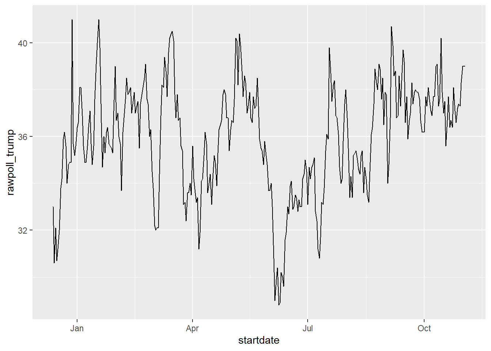

Part of visualization is prepping your data. We previously covered reshaping during our tidyverse review. Today we go more in-depth to on joining and cleaning data.
Required Reading
This page.
Guiding Questions
What is a join and why is it a common data wrangling maneuver?
What is a primary key and why is it important to think about our data in this way?
How do we join spatial objects when the key relationship is spatially defined?
How do we deal with messy date variables?
Joining tables
The information we need for a given analysis may not be just in one table. For example, when forecasting elections we used the function left_join to combine the information from two tables. We also saw this in action using the WDI function (technically, the WDI API) in Project 2. Here we use a simpler example to illustrate the general challenge of combining tables.
Suppose we want to explore the relationship between population size for US states and electoral votes. We have the population size in this table:
state abb region population total
1 Alabama AL South 4779736 135
2 Alaska AK West 710231 19
3 Arizona AZ West 6392017 232
4 Arkansas AR South 2915918 93
5 California CA West 37253956 1257
6 Colorado CO West 5029196 65
The join functions, described below, are designed to handle this challenge.
Joins
The join functions in the dplyr package (part of the tidyverse) make sure that the tables are combined so that matching rows are together. If you know SQL, you will see that the approach and syntax is very similar. The general idea is that one needs to identify one or more columns that will serve to match the two tables. Then a new table with the combined information is returned. Notice what happens if we join the two tables above by state using left_join (we will remove the others column and rename electoral_votes so that the tables fit on the page):
tab <-left_join(murders, results_us_election_2016, by ="state") %>% dplyr::select(-others) %>%rename(ev = electoral_votes)head(tab)
state abb region population total ev clinton trump
1 Alabama AL South 4779736 135 9 34.4 62.1
2 Alaska AK West 710231 19 3 36.6 51.3
3 Arizona AZ West 6392017 232 11 45.1 48.7
4 Arkansas AR South 2915918 93 6 33.7 60.6
5 California CA West 37253956 1257 55 61.7 31.6
6 Colorado CO West 5029196 65 9 48.2 43.3
The data has been successfully joined and we can now, for example, make a plot to explore the relationship:
We see the relationship is close to linear with about 2 electoral votes for every million persons, but with very small states getting higher ratios.
In practice, it is not always the case that each row in one table has a matching row in the other. For this reason, we have several versions of join. To illustrate this challenge, we will take subsets of the tables above. We create the tables tab1 and tab2 so that they have some states in common but not all:
state ev
1 California 55
2 Arizona 11
3 Alabama 9
4 Connecticut 7
5 Alaska 3
6 Delaware 3
We will use these two tables as examples in the next sections.
Left join
Suppose we want a table like tab_1, but adding electoral votes to whatever states we have available. For this, we use left_join with tab_1 as the first argument. We specify which column to use to match with the by argument.
left_join(tab_1, tab_2, by ="state")
state population ev
1 Alabama 4779736 9
2 Alaska 710231 3
3 Arizona 6392017 11
4 Arkansas 2915918 NA
5 California 37253956 55
6 Colorado 5029196 NA
Note that NAs are added to the two states not appearing in tab_2. Also, notice that this function, as well as all the other joins, can receive the first arguments through the pipe:
tab_1 %>%left_join(tab_2, by ="state")
Right join
If instead of a table with the same rows as first table, we want one with the same rows as second table, we can use right_join:
tab_1 %>%right_join(tab_2, by ="state")
state population ev
1 Alabama 4779736 9
2 Alaska 710231 3
3 Arizona 6392017 11
4 California 37253956 55
5 Connecticut NA 7
6 Delaware NA 3
Now the NAs are in the column coming from tab_1.
Inner join
If we want to keep only the rows that have information in both tables, we use inner_join. You can think of this as an intersection:
inner_join(tab_1, tab_2, by ="state")
state population ev
1 Alabama 4779736 9
2 Alaska 710231 3
3 Arizona 6392017 11
4 California 37253956 55
Full join
If we want to keep all the rows and fill the missing parts with NAs, we can use full_join. You can think of this as a union:
full_join(tab_1, tab_2, by ="state")
state population ev
1 Alabama 4779736 9
2 Alaska 710231 3
3 Arizona 6392017 11
4 Arkansas 2915918 NA
5 California 37253956 55
6 Colorado 5029196 NA
7 Connecticut NA 7
8 Delaware NA 3
Semi join
The semi_join function lets us keep the part of first table for which we have information in the second. It does not add the columns of the second. It isn’t often used:
semi_join(tab_1, tab_2, by ="state")
state population
1 Alabama 4779736
2 Alaska 710231
3 Arizona 6392017
4 California 37253956
This gives the same result as:
tab_1 %>%filter(state %in% tab_2$state)
state population
1 Alabama 4779736
2 Alaska 710231
3 Arizona 6392017
4 California 37253956
Anti join
The function anti_join is the opposite of semi_join. It keeps the elements of the first table for which there is no information in the second:
anti_join(tab_1, tab_2, by ="state")
state population
1 Arkansas 2915918
2 Colorado 5029196
The following diagram summarizes the above joins:
(Image courtesy of RStudio1. CC-BY-4.0 license2. Cropped from original.)
Binding
Although we have yet to use it in this book, another common way in which datasets are combined is by binding them. Unlike the join function, the binding functions do not try to match by a variable, but instead simply combine datasets. If the datasets don’t match by the appropriate dimensions, one obtains an error.
Binding columns
The dplyr function bind_cols binds two objects by making them columns in a tibble. For example, we quickly want to make a data frame consisting of numbers we can use.
bind_cols(a =1:3, b =4:6)
# A tibble: 3 × 2
a b
<int> <int>
1 1 4
2 2 5
3 3 6
This function requires that we assign names to the columns. Here we chose a and b.
Note that there is an R-base function cbind with the exact same functionality. An important difference is that cbind can create different types of objects, while bind_cols always produces a data frame.
bind_cols can also bind two different data frames. For example, here we break up the tab data frame and then bind them back together:
state abb region population total ev clinton trump
1 Alabama AL South 4779736 135 9 34.4 62.1
2 Alaska AK West 710231 19 3 36.6 51.3
3 Arizona AZ West 6392017 232 11 45.1 48.7
4 Arkansas AR South 2915918 93 6 33.7 60.6
5 California CA West 37253956 1257 55 61.7 31.6
6 Colorado CO West 5029196 65 9 48.2 43.3
Binding by rows
The bind_rows function is similar to bind_cols, but binds rows instead of columns:
state abb region population total ev clinton trump
1 Alabama AL South 4779736 135 9 34.4 62.1
2 Alaska AK West 710231 19 3 36.6 51.3
3 Arizona AZ West 6392017 232 11 45.1 48.7
4 Arkansas AR South 2915918 93 6 33.7 60.6
This is based on an R-base function rbind.
Set operators
Another set of commands useful for combining datasets are the set operators. When applied to vectors, these behave as their names suggest. Examples are intersect, union, setdiff, and setequal. However, if the tidyverse, or more specifically dplyr, is loaded, these functions can be used on data frames as opposed to just on vectors.
Intersect
You can take intersections of vectors of any type, such as numeric:
intersect(1:10, 6:15)
[1] 6 7 8 9 10
or characters:
intersect(c("a","b","c"), c("b","c","d"))
[1] "b" "c"
The dplyr package includes an intersect function that can be applied to tables with the same column names. This function returns the rows in common between two tables. To make sure we use the dplyr version of intersect rather than the base package version, we can use dplyr::intersect like this:
state abb region population total ev clinton trump
1 Arizona AZ West 6392017 232 11 45.1 48.7
2 Arkansas AR South 2915918 93 6 33.7 60.6
3 California CA West 37253956 1257 55 61.7 31.6
Union
Similarly union takes the union of vectors. For example:
union(1:10, 6:15)
[1] 1 2 3 4 5 6 7 8 9 10 11 12 13 14 15
union(c("a","b","c"), c("b","c","d"))
[1] "a" "b" "c" "d"
The dplyr package includes a version of union that combines all the rows of two tables with the same column names.
state abb region population total ev clinton trump
1 Alabama AL South 4779736 135 9 34.4 62.1
2 Alaska AK West 710231 19 3 36.6 51.3
3 Arizona AZ West 6392017 232 11 45.1 48.7
4 Arkansas AR South 2915918 93 6 33.7 60.6
5 California CA West 37253956 1257 55 61.7 31.6
6 Colorado CO West 5029196 65 9 48.2 43.3
7 Connecticut CT Northeast 3574097 97 7 54.6 40.9
Note that we get 7 unique rows from this. We do not get duplicated rows from the overlap in 1:5 and 3:7. If we were to bind_rows on the two subsets, we would get duplicates.
setdiff
The set difference between a first and second argument can be obtained with setdiff. Unlike intersect and union, this function is not symmetric:
setdiff(1:10, 6:15)
[1] 1 2 3 4 5
setdiff(6:15, 1:10)
[1] 11 12 13 14 15
As with the functions shown above, dplyr has a version for data frames:
state abb region population total ev clinton trump
1 Alabama AL South 4779736 135 9 34.4 62.1
2 Alaska AK West 710231 19 3 36.6 51.3
setequal
Finally, the function setequal tells us if two sets are the same, regardless of order. So notice that:
setequal(1:5, 1:6)
[1] FALSE
but:
setequal(1:5, 5:1)
[1] TRUE
When applied to data frames that are not equal, regardless of order, the dplyr version provides a useful message letting us know how the sets are different:
dplyr::setequal(tab_1, tab_2)
[1] FALSE
TRY IT
Install and load the Lahman library. This database includes data related to baseball teams. It includes summary statistics about how the players performed on offense and defense for several years. It also includes personal information about the players.
The Batting data frame contains the offensive statistics for all players for many years. You can see, for example, the top 10 hitters by running this code:
But who are these players? We see an ID, but not the names. The player names are in this table
Master %>%as_tibble()
We can see column names nameFirst and nameLast. Use the left_join function to create a table of the top home run hitters. The table should have playerID, first name, last name, and number of home runs (HR). Rewrite the object top with this new table.
Now use the Salaries data frame to add each player’s salary to the table you created in exercise 1. Note that salaries are different every year so make sure to filter for the year 2016, then use right_join. This time show first name, last name, team, HR, and salary.
In a previous exercise, we created a tidy version of the co2 dataset:
We want to see if the monthly trend is changing so we are going to remove the year effects and then plot the results. We will first compute the year averages. Use the group_by and summarize to compute the average co2 for each year. Save in an object called yearly_avg.
Now use the left_join function to add the yearly average to the co2_wide dataset. Then compute the residuals: observed co2 measure - yearly average.
Make a plot of the seasonal trends by year but only after removing the year effect.
A note about merging and duplicated rows
When we merge data, we have to be very careful about duplicated rows. Specifically, we have to be certain that the fields we use to join on are unique or that we know they aren’t unique and intend to duplicate rows.
When we have tidy data, we have one row per observation. When we join data that has more than one row per observation, the new dataset will no longer be tidy. Here, the notTidyData is not tidy *in relation to the tidyData as it does not have one observation per year and state. For instance:
tidyData <-bind_cols( state =c('MI','CA','MI','CA'), year =c(2001, 2002, 2001, 2002), Arrests =c(10, 21, 30, 12))notTidyData <-bind_cols(state =c('MI','MI','MI','CA','CA','CA'), County =c('Ingham','Clinton','Wayne','Orange','Los Angeles','Kern'),InNOut_locations =c(0,0,0,20, 31, 8))head(tidyData)
# A tibble: 4 × 3
state year Arrests
<chr> <dbl> <dbl>
1 MI 2001 10
2 CA 2002 21
3 MI 2001 30
4 CA 2002 12
head(notTidyData)
# A tibble: 6 × 3
state County InNOut_locations
<chr> <chr> <dbl>
1 MI Ingham 0
2 MI Clinton 0
3 MI Wayne 0
4 CA Orange 20
5 CA Los Angeles 31
6 CA Kern 8
If we use the only common field, state to merge tidyData, which is unique on state and year, to notTidyData, which is unique on county, then every time we see state in our “left” data, we will get all three counties in that state and for that year. Even worse, we will get the InNOut_locations tally repeated for every matching state!
joinedData <-left_join(tidyData, notTidyData, by =c('state'))joinedData
# A tibble: 12 × 5
state year Arrests County InNOut_locations
<chr> <dbl> <dbl> <chr> <dbl>
1 MI 2001 10 Ingham 0
2 MI 2001 10 Clinton 0
3 MI 2001 10 Wayne 0
4 CA 2002 21 Orange 20
5 CA 2002 21 Los Angeles 31
6 CA 2002 21 Kern 8
7 MI 2001 30 Ingham 0
8 MI 2001 30 Clinton 0
9 MI 2001 30 Wayne 0
10 CA 2002 12 Orange 20
11 CA 2002 12 Los Angeles 31
12 CA 2002 12 Kern 8
Because we asked for all columns of tidyData that matched (on state) in notTidyData, we get replicated Arrests - look at MI in 2001 in the first three rows. The original data had 10 Arrests in Michigan in 2001. Now, for every MI County in notTidyData, we have replicated the statewide arrests!
sum(joinedData$Arrests)
[1] 219
sum(tidyData$Arrests)
[1] 73
Yikes! We now have 3x the number of arrests in our data.
sum(joinedData$InNOut_locations)
[1] 118
sum(notTidyData$InNOut_locations)
[1] 59
And while we might like that we have 3x the In-N-Out locations, we definitely think our data shouldn’t suddenly have more.
The reason this happens is that we do not have a unique key variable. In the WDI tip in Project 2, we didn’t have a single unique key variable - there were multiple values of iso2 country code in the data because we had multiple years for each iso2. Thus, when we merged, use used by = c('iso2','year') because the iso2 x year combination was the unique key.
Here, each dataset would need to have a unique key (or “primary key”) on stateandcountyandyear to merge without risk of messing up our data. Since arrests aren’t broken out by county, we’d have to use summarize to total notTidyData at the state and year (to eliminate county). Then, we’d have to decide of the number of In-N-Outs are the same for each year since notTidyData doesn’t have year.
The lesson is this: always know what your join is doing. Know your unique keys. Use sum(duplicated(tidyData$key)) to see if all values are unique, or NROW(unique(tidyData %>% dplyr::select(key1, key2))) to see if all rows are unique over the 2 keys (replacing “key1” and “key2” with your key fields).
If it shouldn’t add rows, then make sure the new data has the same number of rows as the old one, or use setequal to check.
Parsing dates and times
The date data type
We have described three main types of vectors: numeric, character, and logical. In data science projects, we very often encounter variables that are dates. Although we can represent a date with a string, for example November 2, 2017, once we pick a reference day, referred to as the epoch, they can be converted to numbers by calculating the number of days since the epoch. Computer languages usually use January 1, 1970, as the epoch. So, for example, January 2, 2017 is day 1, December 31, 1969 is day -1, and November 2, 2017, is day 17,204.
Now how should we represent dates and times when analyzing data in R? We could just use days since the epoch, but then it is almost impossible to interpret. If I tell you it’s November 2, 2017, you know what this means immediately. If I tell you it’s day 17,204, you will be quite confused. Similar problems arise with times and even more complications can appear due to time zones.
For this reason, R defines a data type just for dates and times. We saw an example in the polls data:
library(tidyverse)library(dslabs)data("polls_us_election_2016")polls_us_election_2016$startdate %>% head
Look at what happens when we convert them to numbers:
as.numeric(polls_us_election_2016$startdate) %>% head
[1] 17108 17106 17107 17109 17108 17108
It turns them into days since the epoch. The as.Date function can convert a character into a date. So to see that the epoch is day 0 we can type
as.Date("1970-01-01") %>% as.numeric
[1] 0
Plotting functions, such as those in ggplot, are aware of the date format. This means that, for example, a scatterplot can use the numeric representation to decide on the position of the point, but include the string in the labels:
polls_us_election_2016 %>% dplyr::filter(pollster =="Ipsos"& state =="U.S.") %>%ggplot(aes(startdate, rawpoll_trump)) +geom_line()

Note in particular that the month names are displayed, a very convenient feature.
The lubridate package
The tidyverse includes functionality for dealing with dates through the lubridate package.
library(lubridate)
We will take a random sample of dates to show some of the useful things one can do:
[1] May Aug Aug Sep Sep Oct Oct Oct Oct Oct
12 Levels: Jan < Feb < Mar < Apr < May < Jun < Jul < Aug < Sep < ... < Dec
Another useful set of functions are the parsers that convert strings into dates. The function ymd assumes the dates are in the format YYYY-MM-DD and tries to parse as well as possible.
x <-c(20090101, "2009-01-02", "2009 01 03", "2009-1-4","2009-1, 5", "Created on 2009 1 6", "200901 !!! 07")ymd(x)
A further complication comes from the fact that dates often come in different formats in which the order of year, month, and day are different. The preferred format is to show year (with all four digits), month (two digits), and then day, or what is called the ISO 8601. Specifically we use YYYY-MM-DD so that if we order the string, it will be ordered by date. You can see the function ymd returns them in this format.
But, what if you encounter dates such as “09/01/02”? This could be September 1, 2002 or January 2, 2009 or January 9, 2002. In these cases, examining the entire vector of dates will help you determine what format it is by process of elimination. Once you know, you can use the many parses provided by lubridate.
For example, if the string is:
x <-"09/01/02"
The ymd function assumes the first entry is the year, the second is the month, and the third is the day, so it converts it to:
ymd(x)
[1] "2009-01-02"
The mdy function assumes the first entry is the month, then the day, then the year:
mdy(x)
[1] "2002-09-01"
The lubridate package provides a function for every possibility:
ydm(x)
[1] "2009-02-01"
myd(x)
[1] "2001-09-02"
dmy(x)
[1] "2002-01-09"
dym(x)
[1] "2001-02-09"
The lubridate package is also useful for dealing with times. In R base, you can get the current time typing Sys.time(). The lubridate package provides a slightly more advanced function, now, that permits you to define the time zone:
now()
[1] "2026-01-12 15:13:04 EST"
now("GMT")
[1] "2026-01-12 20:13:04 GMT"
You can see all the available time zones with OlsonNames() function.
We can also extract hours, minutes, and seconds:
now() %>%hour()
[1] 15
now() %>%minute()
[1] 13
now() %>%second()
[1] 4.364376
The package also includes a function to parse strings into times as well as parsers for time objects that include dates:
x <-c("12:34:56")hms(x)
[1] "12H 34M 56S"
x <-"Nov/2/2012 12:34:56"mdy_hms(x)
[1] "2012-11-02 12:34:56 UTC"
This package has many other useful functions. We describe two of these here that we find particularly useful.
The make_date function can be used to quickly create a date object. It takes three arguments: year, month, day. make_datetime takes the same as make_date but also adds hour, minute, seconds, and time zone like ‘US/Michigan’ but defaulting to UTC. So create an date object representing, for example, July 6, 2019 we write:
make_date(2019, 7, 6)
[1] "2019-07-06"
To make a vector of January 1 for the 80s we write:
Another very useful function is the round_date. It can be used to round dates to nearest year, quarter, month, week, day, hour, minutes, or seconds. So if we want to group all the polls by week of the year we can do the following:
You work for a travel booking website as a data analyst. A hotel has asked your company for data on corporate bookings at the hotel via your site. Specifically, they have five corporations that are frequent customers of the hotel, and they want to know who spends the most with them. They’ve asked you to help out. Most of the corporate spending is in the form of room reservations, but there are also parking fees that the hotel wants included in the analysis. Your goal: total up spending by corporation and report the biggest and smallest spenders inclusive of rooms and parking.
Unfortunately, you only have the following data:
booking.csv - Contains the corporation name, the room type, and the dates someone from the corporation stayed at the hoted.
roomrates.csv - Contains the price of each room on each day
parking.csv - Contains the corporations who negotiated free parking for employees
Parking at the hotel is $60 per night if you don’t have free parking. This hotel is in California, so everyone drives and parks when they stay.
Tip
Right-click on each of the links, copy the address, and read the URL in using read.csv to read .csv’s
You’ll find you need to use most of the tools we covered on Tuesday including pivot_longer, pivot_wider and more.
You’ll need lubridate and tidyverse loaded up.
Your lab wil be based on similar data (with more wrinkles to fix) so share your code with your group when you’re done.